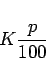

Zinsen stellen entweder eine Gebühr dar, die für einen Kredit (Leihgeld) zu entrichten ist, oder einen Erlös, der von einem Guthaben erzielt wird. Für ein Kapital K, das während einer ganzen Zinsperiode (in der Regel 1 Jahr) angelegt ist, werden am Ende der Zinsperiode
|  | (1.78) |
Zinsen gezahlt. Dabei ist p der Zinssatz pro Zinsperiode, und man sagt, es werden  Zinsen für das Kapital K gezahlt.
Zinsen für das Kapital K gezahlt.